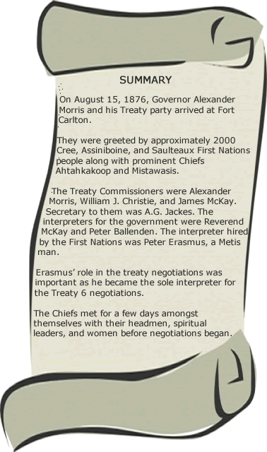

Fort Carlton (1876)
 |
|
Honourable Alexander Morris, Lieutenent -Governor of Manitoba, North-West |
Travel to Fort Carlton
On the afternoon of July 27, 1876, the Honourable Alexander Morris and his treaty party left Fort Garry (present day Winnipeg) and headed northwest along Carlton trail to the Hudson’s Bay Company trading post Fort Carlton (Stonechild and Waiser 10). Situated near the North Saskatchewan River, Fort Carleton was a trading post between 1810 and 1885, and the first site for Treaty 6 negotiations.
Many Chiefs anticipated the arrival of the Queen’s treaty commissioners. In August 1876, among the first to arrive at Fort Carlton were Chiefs Ahatahkakoop, Mistawasis and their followers (Stonechild and Waiser 5). Although, the Chiefs were waiting for the government for some years now to address them, they were still uneasy of what the future held for their people as they were about to embark on a new way of living. Until recent memory, the Plains Cree were masters of their territory, which included much of present-day central Saskatchewan and Alberta. With guns and horses acquired through trade they had driven the Blackfoot and Gros Ventres to the west and south, occupying the rich buffalo-hunting lands of the prairie parkland. Other Nations held them in fear (Stonechild and Waiser 5).
Chief Beardy's Vision
Gov. Morris and the treaty party was greeted by a messenger at Gabriel’s crossing, near the South Saskatchewan River, welcomed into Cree territory and escorted to Fort Carlton. The Crees were advised by members of Yellowquill’s band to prevent the treaty party from crossing the river as they were unhappy about the terms of Treaty 4. Chief Beardy, a spiritual leader known to possess powers, met the treaty party on the journey to the Fort and invited them to meet on a local hill - this was based on a vision he had. Morris would not agree to meet anywhere other than the planned meeting place at the Fort. Chief Beardy then refused to be part of the negotiations at Fort Carlton and Morris understood this would be a problem to the Treaty process for the Willow Cree (Stonechild and Waiser 11). Morris did not understand that Chief Beardy and the Willow Cree declined to negotiate Treaty because it did not follow Beardy's vision, not because of the treaty itself. This became one of many classic misinterpretations of the Treaty process as viewed in history.

Approximately 2,000 Cree, Assiniboine, and Saulteaux people were there to witness and be a part of this historic event, Chiefs Ahtahkakoop and Mistawasis greeted Morris and the Treaty Commissioners on August 15, 1876. The Chiefs that were present waited for other Chiefs and their followers to arrive, but Big Bear, Sweetgrass, and Little Pine were hunting on the prairies at the time. They were unaware of the negotiations at Fort Carlton and thought they would not be coming for another month or so. A messenger was sent for Sweetgrass, but it is unknown why Big Bear and Little Pine didn’t receive the message. So they were not present during the negotiations.
Disagreements
Little Pine and Big Bear were opposed to Treaty negotiations because they believed that the buffalo could still be preserved and that there was a need to regulate the hunting of the buffalo from non-First Nations. Big Bear heard of the disharmony in Treaty 4 territory, they found that the promises of the treaty were not being honored by the government (Dodson 20). Big Bear and Little Pine also believed in the sovereignty of their own Nations and were opposed to the idea of another Nation governing and applying their laws to them. First Nations had practiced their own governance and other systems for thousands of years. They disagreed with many aspects of the Treaty as they found that many of the promises did not provide the Cree with enough security for their future. Even more important, the Chiefs felt that the Treaties would impose European values on the Cree. They felt the treaty did not do enough to protect the Cree 'way of life' and forced assimilation into European culture and 'way of life'. Because of these important disagreements with treaty they would refuse to sign and did all they could to protect what was left of the buffalo herds (Dodson 22). Sadly, in the face of starvation and the inevitable settlement of their lands, Little Pine eventually signed an adhesion to Treaty 6 on July 2, 1879. Big Bear held out on signing an adhesion until 1882.